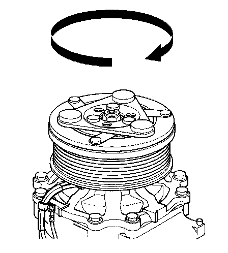
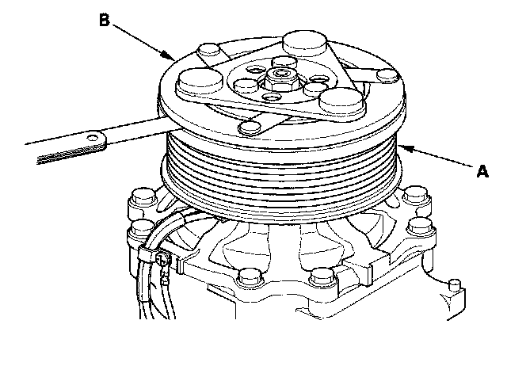
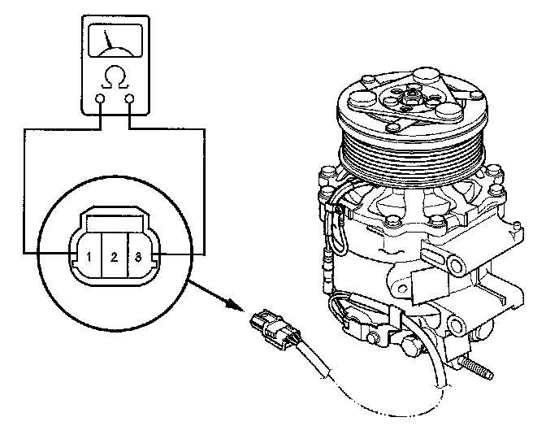
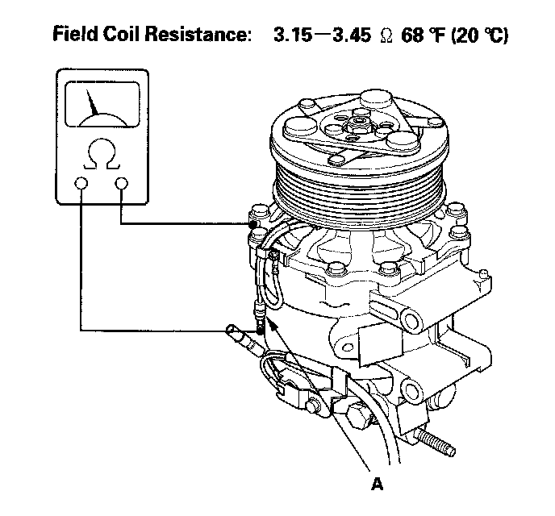

Compressor Clutch: Testing and Inspection
A/C Compressor Clutch Check1. Check the armature plate for discoloration, peeling, or other damage. If there is damage, replace the clutch set.

2. Check the rotor pulley bearing play and drag by rotating the rotor pulley by hand. Replace the clutch set with a new one if it is noisy or has excessive play/drag.

3. Measure the clearance between the rotor pulley (A) and the armature plate (B) all the way around. If the clearance is not within specified limits, remove the armature plate and add or remove shims as needed to increase or decrease clearance.
Clearance: 0.35 - 0.65 mm (0.014 - 0.026 in.)
NOTE: The shims are available in four thicknesses: 0.1 mm, 0.2 mm, 0.4 mm, and 0.5 mm.

4. Check for continuity between the A/C compressor clutch connector NO.1 and No. 3. If there is no continuity, replace the thermal protector.
NOTE: The thermal protector will have no continuity above about 252 to 262° F (122 to 128° C). When the temperature drops below about 241 to 219° F (116 to 104° C), the thermal protector will have continuity.

5. Disconnect the field coil connector (A). Check resistance of the field coil. If resistance is not within specifications, replace the field coil.
Field Coil Resistance: 3.15 - 3.45 ohms 68° F (20° C)